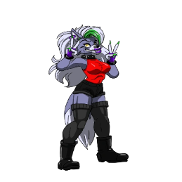

-
Freddy
HP 400

Descrição
Freddy Fazbear É Um Urso Animatronico Criado Pela Fazbear Entertaiment Para Ser O Vocalista Na Freddy Fazbear's Pizza e é o antagonista principal de Five Nights At Freddy's.
-
Monty
HP 800

Descrição
Montgomery Gator, ou simplesmente Monty para abreviar, é um dos Glamrock Animatronics que aparece em Five Nights at Freddy's: Security Breach como um antagonista.
-
Roxanne
HP 1200
Descrição
Roxanne Wolf é uma Animatronic que foi criada para ser uma perseguidora no jogo Five Night's at Freddy's: Security Breach, mas faz uma aparição no teaser do Freddy in Space
-->